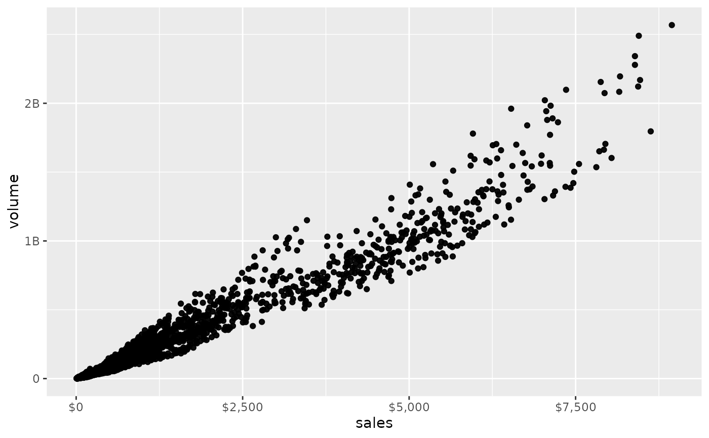
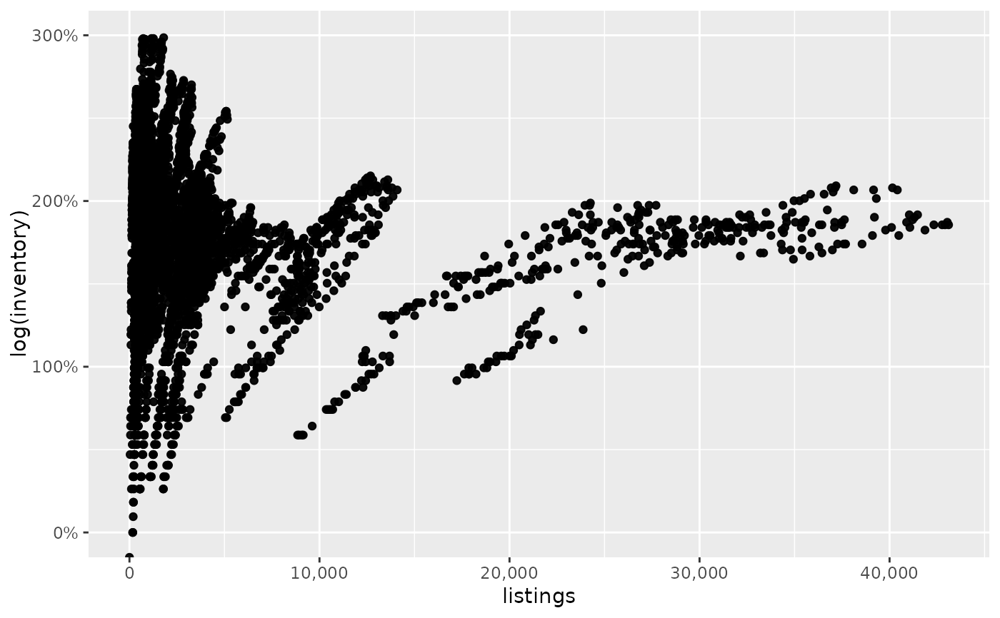
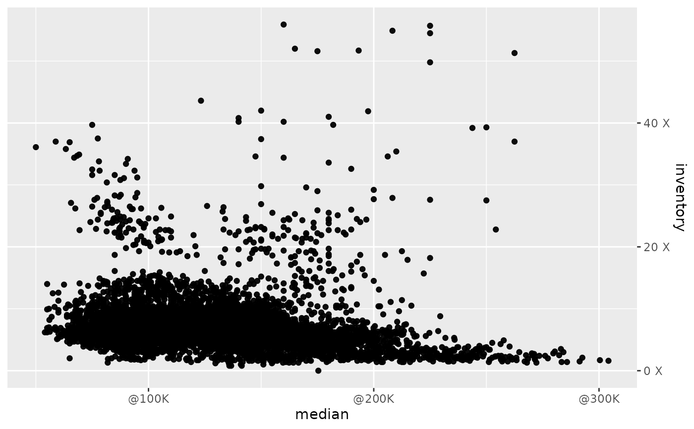

The _comma ones set comma format for axis text, the _percent
ones set percent format for axis text, _dollar for collar currency,
and _abbr for abbreviated format. Lastly, use _formatNum to
further customize your numerical scales with formatNum.
Usage
scale_x_comma(...)
scale_y_comma(...)
scale_x_percent(...)
scale_y_percent(...)
scale_x_dollar(...)
scale_y_dollar(...)
scale_x_abbr(...)
scale_y_abbr(...)
scale_x_formatNum(
...,
decimals = 2,
signif = NULL,
type = Sys.getenv("LARES_NUMFORMAT"),
pre = "",
pos = "",
sign = FALSE,
abbr = FALSE
)
scale_y_formatNum(
...,
decimals = 2,
signif = NULL,
type = Sys.getenv("LARES_NUMFORMAT"),
pre = "",
pos = "",
sign = FALSE,
abbr = FALSE
)Arguments
- ...
Arguments passed to
ggplot2::continuous_scaleorformatNumdepending on the function.- decimals
Integer. Amount of decimals to display. If set to
NULL, thengetOption("digits")will be used.- signif
Integer. Rounds the values in its first argument to the specified number of significant digits.
- type
Integer.
1for International standards.2for American Standards. UseSys.setenv("LARES_NUMFORMAT" = 2)to set this parameter globally.- pre, pos
Character. Add string before or after number.
- sign
Boolean. Add
+sign to positive values.- abbr
Boolean. Abbreviate using num_abbr()? You can use the `decimals` parameter to set abbr's
n(-1) parameter.
Examples
library(ggplot2)
df <- ggplot2::txhousing %>% removenarows(all = FALSE)
ggplot(df, aes(x = sales, y = volume)) +
geom_point() +
scale_x_dollar() +
scale_y_abbr()

# Use any argument from scale_x/y_continuous
ggplot(df, aes(x = listings, y = log(inventory))) +
geom_point() +
scale_x_comma() +
scale_y_percent(limits = c(0, 3))
#> Warning: Removed 204 rows containing missing values or values outside the scale range
#> (`geom_point()`).

# Use any argument from scale_x/y_continuous AND formatNum
ggplot(df, aes(x = median, y = inventory)) +
geom_point() +
scale_x_formatNum(n.breaks = 3, pre = "@", abbr = TRUE) +
scale_y_formatNum(position = "right", decimals = 0, pos = " X")
